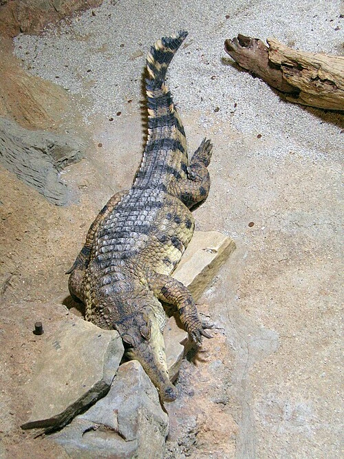
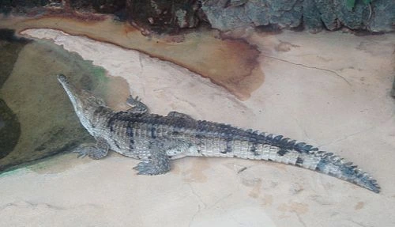

Spetskrokodil
Spetskrokodilen lever i Amerika och kallas även amerikansk krokodil. Den har en lång och smal nos och lever i både salt- och sötvatten.
Pansarkrokodil

Pansarkrokodilen lever i Afrika och blir upp till 4 meter lång. Den äter främst fisk och smådjur och är inte särskilt aggressiv.
Sötvattenskrokodil

Sötvattenskrokodilen lever i Australien och är mindre än andra krokodilarter. Den lever i floder och äter fisk, fåglar och smådjur.